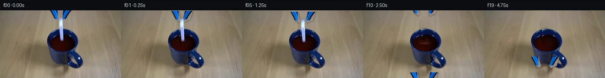

![首帧]()

Round 00
2026-11-04T22:37:06.468734+00:00像素候选变化代码 +214/−0inspection 更新
pixels f8d68f15ea5ab9be · code d508ff06101fb6fa
查看本轮 generate.py 真实 diff
--- previous/generate.py
+++ current/generate.py
@@ -0,0 +1,214 @@
+from pathlib import Path
+
+import cv2
+import numpy as np
+from PIL import Image, ImageChops, ImageDraw, ImageFilter, ImageFont
+
+from artifact_io import save
+
+
+ROOT = Path(__file__).resolve().parent
+W, H = 256, 144
+
+
+def polygon_mask(points, blur=0.7):
+ mask = Image.new("L", (W, H), 0)
+ ImageDraw.Draw(mask).polygon(points, fill=255)
+ if blur:
+ mask = mask.filter(ImageFilter.GaussianBlur(blur))
+ return mask
+
+
+def shifted_layer(rgb, mask, dx, dy):
+ """Translate a source-colored, alpha-masked object on a transparent layer."""
+ rgba = Image.new("RGBA", (W, H), (0, 0, 0, 0))
+ rgba.paste(rgb.convert("RGBA"), (0, 0), mask)
+ return ImageChops.offset(rgba, int(round(dx)), int(round(dy)))
+
+
+def build_clean_plate(src):
+ """Inpaint only the original jaws/domino footprint, leaving the mug untouched."""
+ a = np.asarray(src)
+ mask = np.zeros((H, W), np.uint8)
+
+ # Blue-black jaws and their antialiased outline.
+ cv2.fillPoly(mask, [np.array([(104, 0), (122, 0), (128, 21), (122, 25), (114, 19)], np.int32)], 255)
+ cv2.fillPoly(mask, [np.array([(135, 0), (153, 0), (146, 19), (134, 25), (130, 20)], np.int32)], 255)
+ # Slim ceramic domino: wood section, rear rim, and dark liquid section.
+ cv2.rectangle(mask, (123, 0), (135, 72), 255, -1)
+
+ plate = cv2.inpaint(cv2.cvtColor(a, cv2.COLOR_RGB2BGR), mask, 5, cv2.INPAINT_TELEA)
+ plate = cv2.cvtColor(plate, cv2.COLOR_BGR2RGB)
+
+ # Inpainting across the mug is improved with local symmetric samples from
+ # the same rim/liquid. These narrow repairs are hidden by the moving tile
+ # early and represent the undisturbed surface later.
+ plate[40:53, 123:136] = a[40:53, 136:149][:, ::-1]
+ plate[53:73, 123:136] = a[53:73, 136:149][:, ::-1]
+ # Darken the mirrored liquid toward the central liquid tone.
+ plate[55:73, 123:136] = (
+ plate[55:73, 123:136].astype(np.float32) * 0.72
+ + np.array([45, 9, 5], np.float32) * 0.28
+ ).clip(0, 255).astype(np.uint8)
+ return Image.fromarray(plate)
+
+
+def add_domino(frame, src, top, visible_bottom=69, angle=0.0, alpha_scale=1.0):
+ """Move the source ceramic tile, cropping it at the opaque liquid plane."""
+ crop = src.crop((123, 17, 136, 70)).convert("RGBA")
+ cmask = Image.new("L", crop.size, 0)
+ d = ImageDraw.Draw(cmask)
+ d.rounded_rectangle((2, 0, 10, 52), radius=2, fill=int(255 * alpha_scale))
+ crop.putalpha(cmask.filter(ImageFilter.GaussianBlur(0.35)))
+ if angle:
+ crop = crop.rotate(angle, resample=Image.Resampling.BICUBIC, expand=True)
+ x = 129 - crop.width // 2
+ y = int(round(top))
+
+ # The dark liquid is opaque. A two-pixel fade at the contact line avoids a
+ # pasted edge while still making the descending tile legible.
+ if y + crop.height > visible_bottom:
+ keep = max(0, visible_bottom - y)
+ if keep <= 0:
+ return
+ crop = crop.crop((0, 0, crop.width, keep))
+ if crop.height >= 2:
+ al = np.asarray(crop.getchannel("A")).copy()
+ al[-2] = (al[-2].astype(np.uint16) * 3 // 4).astype(np.uint8)
+ al[-1] = (al[-1].astype(np.uint16) // 3).astype(np.uint8)
+ crop.putalpha(Image.fromarray(al))
+ frame.alpha_composite(crop, (x, y))
+
+
+def add_liquid_disturbance(frame, t):
+ """Draw splash/ripple highlights, clipped to the photographed liquid."""
+ if t < 8:
+ return
+ scale = 4
… diff truncated; 127 more lines …